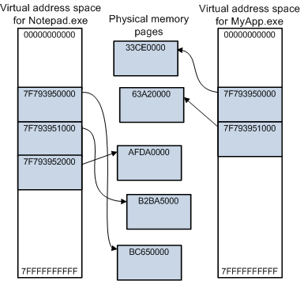
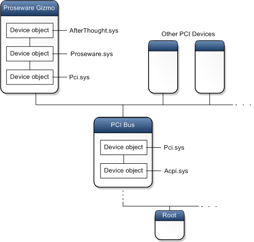
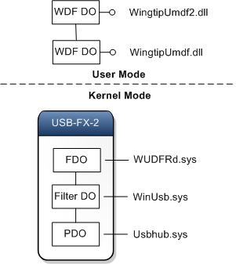
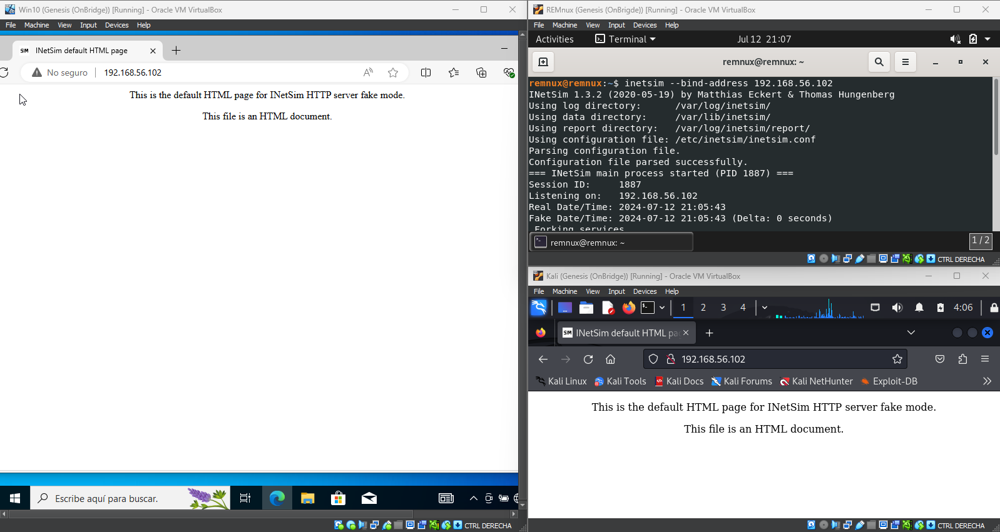
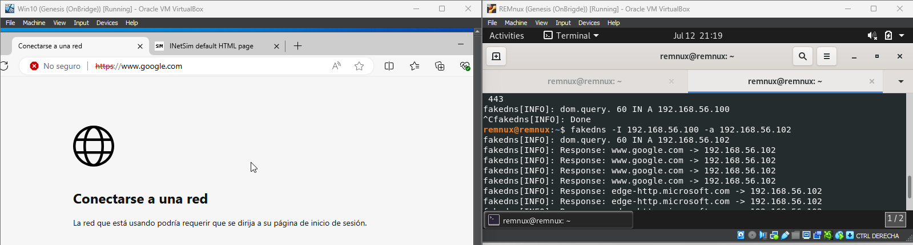
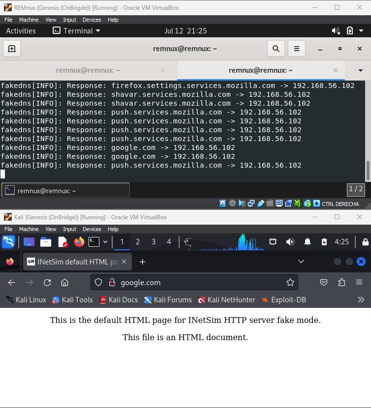
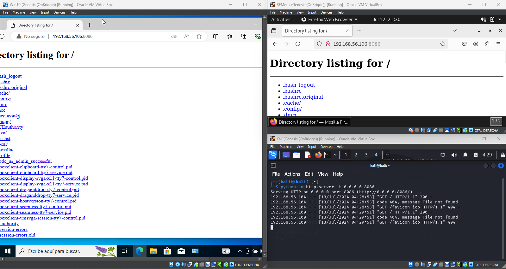
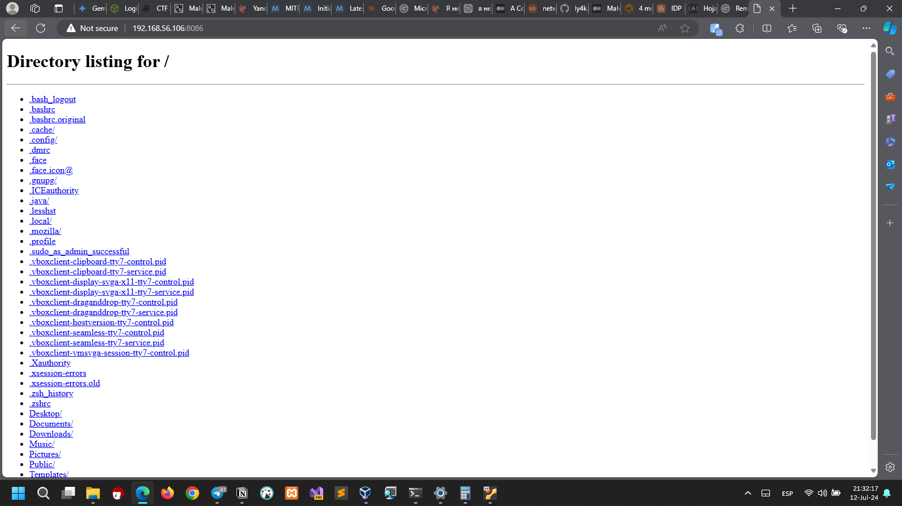
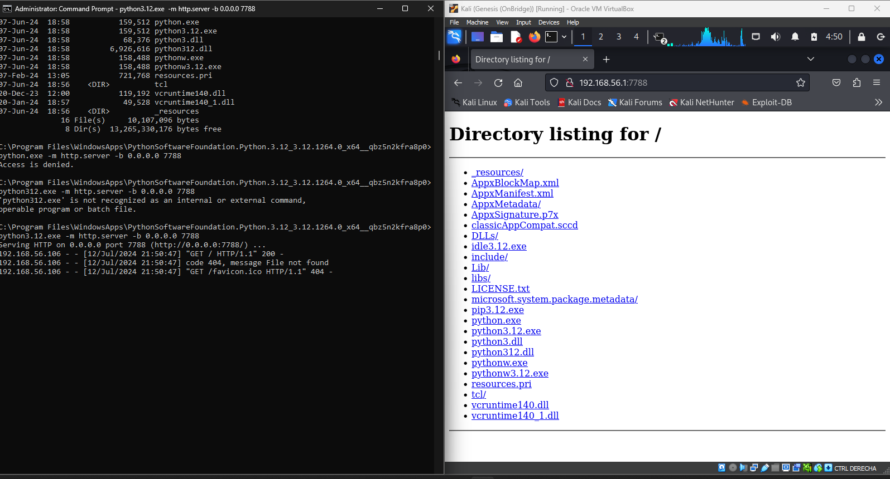

windows-user-kernel-modes.png — División entre Modo Usuario y Modo Núcleo. La línea discontinua marca la frontera de privilegios.
Cuatro semanas intensivas de laboratorio destiladas en una bitácora técnica: arranqué por la arquitectura interna de Windows (modos de ejecución, memoria virtual, controladores KMDF/UMDF) y los formatos PE/ELF/DEX, y terminé construyendo cadenas ROP, inyectando shellcode y estudiando el bypass de mitigaciones. El recorrido incluye cuatro CVEs reales explotados en Chrome V8 y WebRTC, un entorno práctico con VirtualBox + fakedns + INetSim y un plan de retoma con todo lo que quedó pendiente.
Esto no es un tutorial ordenado: es una bitácora de laboratorio. Recoge apuntes, diagramas, configuraciones y pruebas que ejecuté durante septiembre de 2024, junto al análisis de vulnerabilidades reales y trozos crudos de mi proceso de aprendizaje. Muestra el camino tal cual fue: temas que se ramifican, conceptos que vuelven una y otra vez desde ángulos distintos, intentos fallidos que me obligaron a volver a los fundamentos y un laboratorio que creció de forma orgánica.
Para un investigador ofensivo, identificar una vulnerabilidad es solo media ecuación: la otra mitad es convertir ese bug en un exploit funcional. Esa capacidad me sirve para tres cosas muy concretas: competir en programas de Bug Bounty, construir PoCs reutilizables como parte de mi trabajo profesional y entender de verdad cómo piensan y operan los adversarios reales. Este laboratorio nació precisamente para dejar de sistematizar ese conocimiento solo de cabeza y hacerlo sobre papel.
La ruta que me tracé tiene tres fases: primero los fundamentos (buffer overflow, ROP, taxonomía de corrupción de memoria); después la profundización (format strings, exploits contra estructuras de archivos, abuso de allocators dinámicos, el concepto de máquinas extrañas); y finalmente la práctica (retos tipo Nightmare de guyinatuxedo, CTFs aplicados a escenarios reales y simulaciones de adversario). Esta bitácora documenta sobre todo la primera fase, con incursiones serias en la segunda.
Desarrollar exploits comparte mucho del mindset del análisis de malware que ya aplico en el triage automatizado de PE con Capstone y en la evasión estática de Mirai en ASM. La diferencia es sutil pero decisiva: aquí no me limito a leer el código, lo manipulo para que haga exactamente lo que yo quiero. En el fondo, exploit development es el arte de secuestrar el flujo de ejecución de un programa para que haga algo que su desarrollador nunca contempló.
Explotar binarios en Windows sin conocer sus entrañas es trabajar a ciegas. No basta con saber ensamblador: necesito saber dónde corre cada cosa, cómo se administra la memoria y qué piezas del sistema operativo participan en cada operación que intento secuestrar.
Windows reparte la ejecución entre dos modos de privilegio del procesador. En el modo usuario viven las aplicaciones: cada proceso obtiene su propio espacio de direcciones virtuales privado. El modo kernel, en cambio, comparte un único espacio de direcciones: controladores, núcleo del sistema y HAL corren ahí con acceso total a la memoria del sistema y a todas las instrucciones de la CPU. Un fallo a este nivel tumba la máquina entera. El modelo de seguridad se apoya en anillos de protección, y por eso los exploits de kernel persiguen justo eso: saltar de Ring 3 a Ring 0.
Las CPUs trabajan con direcciones virtuales que las tablas de páginas traducen a direcciones físicas. Un proceso de 32 bits dispone de ~2 GB; uno de 64 bits llega a ~128 TB. Ese salto tiene consecuencias directas sobre lo efectivo que resulta ASLR. Además, un driver en modo kernel debe extremar cuidado al tocar direcciones del espacio de usuario: la dirección que recibe pertenece al espacio virtual del proceso que originó la petición, que puede ya no ser el proceso activo cuando la operación se completa.

| Componente | Función | Relevancia para Explotación |
|---|---|---|
| Administrador de Objetos | Archivos, dispositivos, sincronización, registro | Manipulación de objetos del kernel para escalada |
| Administrador de Memoria | Memoria física del sistema | Fundamental para ASLR, DEP, page tables |
| Administrador de E/S | Comunicación apps y controladores | IRPs, pilas de dispositivos, IOCTLs |
| Monitor de Referencia de Seguridad | Rutinas para control de acceso | Bypass de controles de acceso |
| HAL | Capa de abstracción de hardware | Acceso directo al hardware en exploits avanzados |

Ese diagrama se convirtió en mi referencia permanente. Cada vez que disecciono un driver vulnerable o armo una cadena ROP, regreso a él para situar en qué capa estoy pisando. La explotación de kernel no se improvisa: exige tener este mapa mental dibujado antes de escribir la primera línea.
Los controladores son una superficie de ataque de primera clase: un driver vulnerable en modo kernel es literalmente una puerta abierta a Ring 0. Dediqué varias sesiones del laboratorio a entender cómo se estructuran y cómo procesan las solicitudes que les llegan.
Hay Filter Drivers (añaden lógica intermedia), Function Drivers (hablan directamente con el dispositivo) y Software Drivers (solo tocan estructuras del kernel). Todos se organizan en pilas. El concepto clave que me despejó el panorama: un controlador es básicamente una colección de callbacks; una vez inicializado, se queda esperando a que el sistema lo invoque cuando ocurre un evento.
En Windows, cada dispositivo cuelga del árbol PnP como un nodo con su propia pila de dispositivos: una lista ordenada de objetos de dispositivo, cada uno ligado a su controlador. El driver del bus crea el Physical Device Object (PDO); encima se colocan el Function Driver (FDO) y, opcionalmente, los Filter Drivers (Filter DO).



Para interiorizar la anatomía de un driver escribí un Hello World KMDF. El punto de entrada es DriverEntry, que prepara las estructuras del controlador; el sistema invoca EvtDeviceAdd en cuanto detecta el dispositivo:
Un driver que expone IOCTLs sin validarlas deja que cualquier proceso de modo usuario le lance peticiones maliciosas directo al kernel. El caso de Kernel Streaming documentado por DEVCORE —que analizo más abajo— demuestra que estos bugs pueden sobrevivir décadas sin parche. Es el mismo patrón de "confiar en el origen sin verificar permisos" que encontré en la auditoría de la API financiera.
Explotar exige entender la estructura de los archivos que voy a atacar. Cada ecosistema tiene el suyo: PE en Windows, ELF en Linux y DEX dentro del APK en Android.
El formato PE organiza el ejecutable en encabezados y secciones. El encabezado DOS redirige hacia el resto de la imagen; el encabezado NT guarda el entry point real, el número de secciones y el tamaño de la imagen. La tabla de secciones describe .text (código), .data (datos inicializados), .rdata (solo lectura) y .reloc (reubicaciones), que se vuelve crucial cuando ASLR está activo. Mi triage de PE con Capstone parte exactamente de esta metodología de análisis.
ELF guarda similitudes con PE pero gana flexibilidad. Las secciones que más me importan: .text, .plt (imprescindible para ROP), .got (objetivo clásico de sobrescritura) y .dynamic. Además de secciones, ELF define segmentos: el segmento de texto contiene el código y el de datos los datos. Distinguir ambos es vital para exploits que manipulan el layout de memoria.
Un APK es un ZIP que empaqueta el archivo DEX, el manifiesto, recursos y bibliotecas nativas. El bytecode DEX corre sobre la máquina virtual de Android (Dalvik/ART) y el análisis de vulnerabilidades suele plantearse a nivel de VM. Me resultó inevitable conectarlo con mi trabajo previo: la metodología que apliqué en el reversing de la VM MC7 de Siemens —entender la máquina virtual, su bytecode y cómo traduce instrucciones— traslada casi línea por línea. Para el ecosistema Android, JADX, Apktool, Frida y MobSF cubren tanto el análisis estático como el dinámico.
El ensamblador es el único idioma que el procesador habla de verdad. A diferencia de un desarrollador de aplicaciones, un desarrollador de exploits trabaja con código máquina en bruto: hay que leer lo que la CPU ve —registros, convenciones de llamada, segmentación de memoria— y entender cómo los tipos de alto nivel terminan convertidos en bytes sin procesar.
ARM64 domina el mercado móvil. Al ser RISC, su conjunto de instrucciones es más simple que el de x86. En explotación de apps Android normalmente se trabaja a nivel de VM analizando bytecode DEX; la excepción son las bibliotecas nativas (.so): ahí la explotación binaria tradicional sobre ARM64 vuelve a mandar.
Las aplicaciones .NET se compilan a CIL y el CLR las ejecuta mediante JIT. El código gestionado cruza al mundo nativo vía P/Invoke y COM, y esos puntos de transición entre modos son superficies de ataque potenciales.

Inyectar shellcode consiste en depositar un fragmento de código en ensamblador dentro de una región de memoria alcanzable y redirigir hacia él el flujo de ejecución. Nada de portabilidad: cada arquitectura trae su propio set de instrucciones, endianness y convención de llamada.
El byte nulo (0x00) corta cadenas en C: si el shellcode se copia con strcpy, muere truncado. Los filtros de caracteres de aplicaciones web también bloquean bytes concretos. Entre los gotchas habituales: manejar mal la pila y olvidar mitigaciones como DEP. Depurar shellcode merece un arte aparte. Dos referencias que tengo siempre a mano: x64.syscall.sh y la referencia x86 de Felix Cloutier.
La corrupción de memoria abre la puerta a buena parte de los exploits: ocurre cuando un programa escribe fuera de los límites asignados y pisa datos adyacentes.
| Vulnerabilidad | Mecanismo | Impacto Típico |
|---|---|---|
| Buffer Overflow | Escribir más datos de los que el búfer puede contener | Sobrescritura del EIP/RIP → ejecución de código |
| Use-After-Free | Acceder a un bloque de memoria ya liberado | Escritura en memoria liberada → corrupción del heap |
| Double Free | Liberar un bloque de memoria dos veces | Corrupción de estructuras del gestor de memoria |
| Format String | Formato de string controlado por el atacante | Lectura/escritura arbitraria en memoria |
| Race Condition | Acceso concurrente sin sincronización | Corrupción de datos, escalada de privilegios |
Reproduje el caso clásico para fijar la mecánica. Aquí name reserva 100 bytes pero read acepta hasta 0x100 (256):
Si el compilador coloca secret inmediatamente después de name en la pila, basta enviar 100 'A' seguidas de \x37\x13\x00\x00 (0x1337 en little-endian) para sobrescribir secret y superar la verificación. Siguiendo a llenar el buffer alcanzo el EBP guardado y luego el EIP, redirigiendo la ejecución hacia algo como give_shell(). De esa idea arranca todo el Return Oriented Programming.
La estrategia moderna se define en esa interacción: necesito una fuga de dirección (contra ASLR), una cadena ROP (contra DEP) y, si el objetivo es kernel, probablemente también bypass de canary y de kCFG.
El Return Oriented Programming surge como respuesta directa a DEP: si no puedo ejecutar código desde la pila, reutilizo el que ya vive dentro del binario. La receta es cazar gadgets —pequeñas secuencias de instrucciones que terminan en RET— y encadenarlas para componer un flujo de ejecución a mi medida.
| Técnica | Mecanismo | Ventaja |
|---|---|---|
| ROP | Encadena gadgets terminados en RET | La más versátil y documentada |
| JOP | Usa instrucciones JMP en lugar de RET | Evade detectores basados en secuencias de RET |
| Ret2libc | Llama directamente a funciones de libc | Simple si libc no tiene ASLR |
| Ret2syscall | Realiza llamadas al sistema directamente | No depende de funciones de biblioteca |
| Ret2plt | Llama a funciones vía PLT | Útil para evadir ASLR parcial |
| Ret2dlresolve | Resuelve símbolos dinámicamente | Efectiva incluso con ASLR completo |
| Function Overriding | Sobrescribe el puntero a una función | Control preciso del flujo de ejecución |
En 64 bits los argumentos viajan por registros, así que para invocar system necesito controlar RDI. Con gadgets como pop rdi; ret localizados mediante ROPgadget o ropper compongo una pila falsa:
Al retornar main, el flujo salta a pop rdi; ret: RDI absorbe el valor de la pila y el RET siguiente aterriza en pop rsi; pop r15; ret, que limpia los dos valores sobrantes. El retorno final cae en system con RDI apuntando ya a nuestro comando. Practicar esta mecánica en ROP Emporium y pwn.college fue lo que la fijó en mis manos.
Una vulnerabilidad de format string aparece cuando la entrada del usuario se usa como argumento de formato de printf. Con "%x.%x.%x.%x", la función va popeando valores de la pila; con "%n$x" indexo directamente cualquier argumento:
Enviando %7$llx como entrada, printf escupe el secret_num que dormía en la pila: Hello 8badf00d3ea43eef! You'll never get my secret!. Esta técnica complementa a ROP porque aporta justo lo que ASLR exige: una fuga de dirección confiable.
Para aterrizar la teoría elegí varios CVEs con explotación confirmada en la naturaleza. Estos casos muestran en acción las técnicas de corrupción de memoria, fuga de información y bypass de mitigaciones que recorrí en las secciones anteriores.
Fuente: Packet Storm Security, publicado por Rajvardhan Agarwal (2021). Descripción oficial: out of bounds write en V8 en Chrome anterior a 83.0.4103.106 que permite heap corruption mediante una página HTML manipulada.
El exploit sigue el patrón que se volvió estándar en navegadores modernos. Primero instancia WebAssembly para conseguir una región RWX donde residen las funciones compiladas:
Después implementa primitivas de lectura/escritura arbitraria convirtiendo entre float64 y uint64 (ftoi / itof), corrompe un array para ganar acceso a la memoria del proceso y barre regiones predefinidas buscando la página RWX de WebAssembly:
El exploit solo funciona con el sandbox de Chrome deshabilitado. La cadena completa —vulnerabilidad + escape de sandbox— es lo que define el impacto real. En mi intento de replicación (documentado en la Sección 9) ese fue exactamente el muro que me encontré.
Fuente: Chromium Bug Tracker, reportado por Clément Lecigne (Google TAG) con asistencia de Samuel Groß (Google Project Zero). Severidad: P0, explotado como 0-day.
Mecanismo: TheHole es un valor interno de V8 (un Oddball) que funciona como centinela. Cuando no hay excepción pendiente, pending_exception_ se establece a the_hole_value(). El bug: en JsonStringifier::SerializeArrayLikeSlow, cuando builder_.HasOverflowed() devuelve true, la función retorna EXCEPTION sin haber dejado una excepción pendiente registrada, y TheHole termina filtrándose al script JavaScript.
Explotación vía Map: TheHole recibe tratamiento especial en JSMap. Usarlo como clave y borrarlo dos veces decrementa el tamaño del mapa dos veces, dejándolo en -1:
Fix: commit be55c16e50 — comprobar si existe una excepción pendiente antes de retornarla. El bug estuvo latente ~4 años antes de descubrirse, afectando a todas las versiones recientes de Chrome.
Fuente: Chromium Bug Tracker, reportado por Clément Lecigne y Vlad Stolyarov (Google TAG). Severidad: P1, explotado como RCE en Android.
Mecanismo: heap buffer overflow en WebRtcAudioSink::DeliverRebufferedAudio. Una condición de carrera o fallo lógico deja un buffer asignado con tamaño incorrecto en OnSetFormat (con parámetros de audio manipulados desde JavaScript). Cuando DeliverRebufferedAudio escribe asumiendo el tamaño mayor, se produce el overflow de heap.
El stack trace de ASAN confirma el crash: heap-buffer-overflow WRITE of size 2 en AudioBus::ToInterleavedPartial → WebRtcAudioSink::DeliverRebufferedAudio. El fix inicial detiene el sink ante configuraciones inválidas (commit 340b7e30), con un fix posterior para la causa raíz en un bug aparte.
Fuente: Chromium Bug Tracker, reportado por Clément Lecigne (Google TAG). Severidad: P0, explotado como 0-day.
Mecanismo: bug de optimización JIT. Durante Reflect.defineProperty(globalThis, 'stack', {...}), el getter de stack dispara Error.prepareStackTrace, cuyos side effects invalidan el estado a medio computar del descriptor de propiedad. El código JIT ya compilado, cargado de asunciones falsas, termina filtrando TheHole. Fix: convertir Error.captureStackTrace() en no-op para el objeto global.
Tres de los cuatro CVEs analizados (CVE-2021-38003, CVE-2023-2033 y el bug de JSON.stringify) giran alrededor de TheHole, el centinela interno de V8. Filtrar valores internos del motor JavaScript es un vector recurrente porque esos valores tienen comportamientos especiales que rompen las asunciones del JIT y de las estructuras del runtime. Para explotar navegadores modernos, conocer los internals de V8 —Isolate, Oddball, Maps, propiedades internas— pesa tanto como saber ensamblador.
Esta sección conserva el camino desordenado previo a las notas pulidas: intentos fallidos, bloqueos técnicos y ajustes de método que me devolvieron más de una vez a los fundamentos.
En julio de 2024 quise replicar el exploit de Chrome V8 RCE de la Sección 8.1 con una ambición extra: usarlo como pieza inicial de una cadena de infección completa —acceso inicial drive-by (T1189), ejecución vía explotación de cliente (T1203), evasión con ofuscación (T1140) y C2 sobre protocolo no estándar (T1095)—.
Los problemas llegaron con la búsqueda de direcciones de memoria: el exploit crea un arreglo grande, corrompe memoria, barre espacios predefinidos en busca de regiones RWX e inyecta shellcode si las encuentra; en mi entorno ese escaneo simplemente no funcionaba. Tras varios días encontré la causa: la vulnerabilidad solo es explotable con el sandbox de Chrome deshabilitado, y esa limitación no estaba documentada con claridad. La lección me quedó tatuada: entre un exploit funcional en laboratorio y uno viable en un ataque real se interpone todo el entorno de mitigaciones. Para profundizar en la técnica de búsqueda de regiones RWX usé ired.team — Finding all RWX Protected Memory Regions.
En agosto de 2024 arranqué un análisis sistemático de 7-Zip como ejercicio de caza de vulnerabilidades. Con VirusTotal y Detect It Easy determiné:
La estrategia: localizar funciones que procesen grandes volúmenes de entrada y auditar sus comprobaciones de límites, cazar variables usadas antes de inicializarse, revisar aritmética de punteros sin validación, y asumir que las optimizaciones agresivas del compilador endurecen la lectura pero multiplican los errores sutiles. Una técnica adicional en mi lista: compilar con y sin optimizaciones para separar comportamientos intencionales de artefactos del compilador.
El análisis destapó carencias en mi lectura de ensamblador, así que hice un repaso documentando fragmentos reales:
La instrucción cmp word [rel __dos_header], 0x5a4d busca los bytes 'MZ' que identifican un ejecutable Windows válido. Es exactamente el tipo de detalle que quien desarrolla exploits debe reconocer de un vistazo.
En paralelo, DEVCORE publicó Streaming vulnerabilities from Windows Kernel: más de diez vulnerabilidades en Kernel Streaming documentadas en dos meses. La bug class principal: Access Mode Mismatch en el IO Manager. Si un driver construye su IRP con IoBuildDeviceIoControlRequest sin fijar RequestorMode, este hereda KernelMode. Cuando el driver receptor usa RequestorMode para decidir si aplica sus chequeos de seguridad, esos chequeos se saltan: un atacante desde modo usuario envía peticiones que pasan por provenir del kernel. DEVCORE lo explotó en ks.sys usando RtlSetAllBits como gadget para bypasear kCFG y lograr escalada a SYSTEM; la vulnerabilidad llevaba presente desde Windows 7.
Pilas de dispositivos, IRPs, IOCTLs y validación de RequestorMode no son abstracciones de manual: son exactamente los mecanismos que DEVCORE explotó. Y el patrón de fondo —confiar en que el llamante es legítimo— es el mismo error de autorización que documenté en la auditoría de la API financiera.
Como caso de estudio simulé el rol de un Threat Author usando Kali Linux, REMnux y un Windows 10 vulnerable a CVE-2020-6507.
Levanté tres máquinas virtuales en VirtualBox sobre red Host-Only:







| Táctica | Técnica MITRE | Implementación |
|---|---|---|
| Acceso Inicial | T1189 — Drive-by Compromise | Sitio web falso que explota CVE-2020-6507 |
| Ejecución | T1203 — Exploitation for Client Execution | Shellcode que descarga y ejecuta malware |
| Evasión | T1140 — Deobfuscate/Decode | Payload codificado |
| Evasión | T1564 — Hide Artifacts | Ejecución en memoria, sin archivos en disco |
| Evasión | T1036 — Masquerading | Proceso malicioso se hace pasar por Chrome.exe desde %APPDATA% |
| C2 | T1095 — Non-Application Layer Protocol | Reverse shell TCP hacia Kali Linux |
La técnica de Masquerading (T1036) merece pausa especial. En un escenario real el malware se copiaría a %APPDATA%\Google\Chrome\Application\chrome.exe y correría desde ahí. Las herramientas EDR cazan esto vigilando procesos chrome.exe lanzados desde directorios anómalos, firmas de código inválidas o relaciones de proceso sospechosas (por ejemplo, chrome.exe hijo de powershell.exe).
Este mes de laboratorio (septiembre de 2024) consolidó principios que hoy doy por sentados:
El laboratorio se pausó al cerrar septiembre de 2024. Las VMs siguen configuradas pero apagadas; el análisis de 7-Zip quedó en reconocimiento (compilador identificado, estrategia trazada, explotación incompleta); la réplica de CVE-2020-6507 sigue bloqueada por la dependencia del sandbox de Chrome; y el estudio de Kernel Streaming de DEVCORE quedó como referencia técnica sin práctica propia.
No fue falta de interés sino redirección de prioridades hacia proyectos de cliente que exigían atención inmediata. Aun así, cada hora invertida aquí se convirtió en capacidad que apliqué después en servicios profesionales: la metodología de reversing de formatos propietarios, el análisis de mecanismos de autorización en APIs y la comprensión de mitigaciones a nivel de sistema operativo.
Cuando retome el laboratorio, estas son las tareas pendientes —y cualquiera que quiera replicar este camino puede usarlas como guía—:
| # | Tarea | Prioridad | Dependencias | Resultado Esperado |
|---|---|---|---|---|
| 1 | Completar desafíos pendientes de pwn.college (Debugging, Reverse Engineering, Memory Errors, Program Exploitation, Kernel Security) | Alta | VM con Linux, acceso a pwn.college | Dominio práctico de explotación binaria en Linux |
| 2 | Montar laboratorio de fuzzing con AFL++ sobre objetivos userland (parsers de imágenes, codecs, librerías de compresión) | Alta | VM Linux, AFL++ instalado, binarios objetivo compilados con ASAN | Capacidad de encontrar crashes reproducibles y hacer triage |
| 3 | Implementar exploit para CVE-2020-6507 encadenado con técnica de evasión de sandbox (investigar sandbox escapes públicos para versiones de Chrome <83) | Media | VM Windows 10 con Chrome vulnerable, laboratorio VirtualBox | Cadena de explotación completa: RCE + sandbox escape |
| 4 | Retomar análisis de 7-Zip: completar el reversing de funciones que manejan entrada de archivos comprimidos, identificar posibles vectores de corrupción | Media | Ghidra, IDA Free, VM Windows | Reporte de superficie de ataque o PoC de vulnerabilidad |
| 5 | Practicar heap exploitation: Use-After-Free, Double Free, House of Force, tcache poisoning usando los recursos de how2heap | Alta | VM Linux con glibc debug symbols | Capacidad de desarrollar exploits para vulnerabilidades de heap |
| 6 | Estudiar e implementar bypass de kCFG (Kernel Control Flow Guard) usando técnicas documentadas por DEVCORE y otros investigadores | Media | VM Windows 10/11, WinDbg, driver vulnerable de prueba | PoC de escalada de privilegios en Windows con kCFG bypass |
| 7 | Explorar fuzzing de drivers Windows con syzkaller o herramientas similares | Baja | VM Windows con debugging kernel habilitado | Capacidad de encontrar vulnerabilidades en drivers reales |
| 8 | Documentar metodología de análisis de APIs para detección de IDOR, JWT reuse y Broken Object Level Authorization, aplicando lecciones del pentest financiero | Media | Postman, Burp Suite, entorno de pruebas | Guía metodológica reutilizable para auditorías |
| 9 | Estudiar explotación de microarquitectura: ejecución especulativa (Spectre, Meltdown) y vulnerabilidades de canal lateral | Baja | Material de pwn.college CSE598, CPU vulnerable | Comprensión de vectores de ataque a nivel de silicio |
| 10 | Automatizar generación de exploits con scripts en Python: integración con Ghidra (headless), extracción automática de gadgets ROP, generación de payloads | Media | Ghidra, Python, pwntools | Toolkit reutilizable para acelerar el ciclo de exploit development |
Este laboratorio no es un producto terminado: es una fotografía de un proceso vivo. Congelarlo fue una decisión pragmática; los clientes pagan facturas y el laboratorio, por valioso que sea a largo plazo, no factura hoy. Pero cada servicio profesional que entregué después de septiembre de 2024 llevaba cosido el conocimiento que nació aquí.
Cuando un cliente me pregunta si sé hacer reversing de un formato propietario, la respuesta se apoya en haber diseccionado PE, ELF y DEX. Cuando tengo que explicar por qué una API es vulnerable a IDOR, uso el mismo patrón de "validar origen sin verificar permisos" que estudié en los drivers de Windows y en los CVEs de Chrome. Cuando escribo shellcode para una PoC, cada byte prohibido que evito y cada ajuste de endianness vienen de las horas de práctica registradas en estas páginas.
El laboratorio se retomará. Mientras tanto, este documento queda como evidencia de algo que aprendí por las malas: el exploit development no se aprende en tutoriales de fin de semana. Se construye leyendo arquitectura de kernel durante horas, fallando al replicar exploits ajenos, frustrándose cuando el sandbox te bloquea — y descubriendo que, aun sin cruzar la meta, el recorrido ya te convirtió en un profesional mejor que el que empezó.
El exploit development moderno exige más que nunca: mitigaciones como kCFG, shadow stacks, MTE y compiladores memory-safe van cerrando las vías tradicionales. Pero enormes cantidades de software siguen sin hardening: apps empresariales, IoT, sistemas embebidos, drivers legacy, servicios que nadie reescribirá en Rust. La disciplina no muere: muta hacia exploits compuestos (fuga + ROP + bypass de sandbox), data-oriented exploitation (corrupción de estado sin secuestro de flujo) y combinaciones de bugs de alto y bajo nivel. El laboratorio queda congelado aquí, pero la capacidad de retomarlo —y de aplicar lo aprendido— permanece intacta.
Este laboratorio comparte fundamentos con el resto del portafolio. La misma metodología de reversing y análisis de memoria sostiene mis auditorías de seguridad, mis análisis de malware y mi trabajo sobre infraestructura crítica.